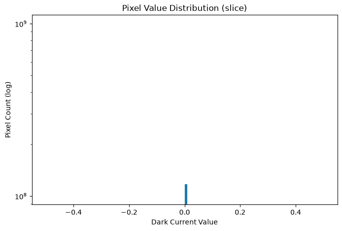
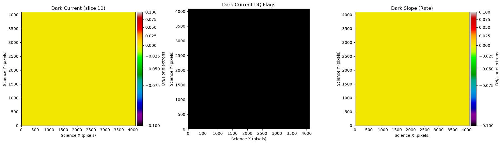

Understanding the Roman WFI Dark Current Reference File#
Kernel Information and Read-Only Status#
To run this notebook, please select “Roman Research Nexus {VERSION}” kernel at the top right of your window. For example “Roman Research Nexus 2026.2”.
This notebook is read-only. You can run cells and make edits, but you must save changes to a different location. We recommend saving the notebook within your home directory, or to a new folder within your home (e.g. file > save notebook as > my-nbs/nb.ipynb). Note that a directory must exist before you attempt to add a notebook to it.
Introduction#
The purpose of this notebook is to understand the content and purpose of the Dark Current (DARK) reference file.
More details about this and other reference files can be found in the Reference File Information
Local Run Settings#
If you want to run the notebook in your local machine, refer to the information in local installation instructions before proceeding with the notebook. The instructions provide important information about setting up your environment and installing dependencies.
Imports#
Libraries used:
os for operating system functions
astropy for image normalization
copy for making copies of Python objects
crds for access to calibration reference files
matplotlib and mpl_toolkits for plotting images
numpy for array manipulation
roman_datamodels for opening Roman WFI ASDF files
import os
from astropy.visualization import simple_norm
import copy
import matplotlib.pyplot as plt
from matplotlib import colors, colormaps as cm
from mpl_toolkits.axes_grid1 import make_axes_locatable
import numpy as np
import roman_datamodels as rdm
The Calibration Reference Data System (CRDS)#
The reference files, developed and validated by STScI’s Science Operations Center, are continually updated as new WFI data become available. For more information about how CRDS works and how it assigns the most appropriate reference file for each calibration step, refer to the notebook Understanding CRDS and How to Select Calibration Reference files.
IMPORTANT NOTE: Reference files are a work in progress and will be updated several times before Roman launch. If you notice irregularities or missing information, please understand that they may be a known issue. If you have questions, please contact the Roman Help Desk.
import crds
Now let’s dive into this reference file type.
Darks#
The DARK reference file is selected based on the WFI mode (imaging or spectroscopy) used to obtain the science data. During the romancal.dark_current.DarkCurrentStep() step, the dark current is subtracted on a pixel-by-pixel and resultant-by-resultant basis. Pixels that are undefined in the dark reference file will not be subtracted from the science data.
The dark reference files are created from dark calibration datasets. A set of dark files are sigma clipped, and stacked resultant-by-resultant to create a super dark.
For more details, see the romancal documentation and Rdox documentation for dark current subtraction.
Before proceeding, let’s check the environmental variables set for CRDS
print(f"CRDS server location: {os.environ.get('CRDS_SERVER_URL')}")
print(f"CRDS context file: {os.environ.get('CRDS_CONTEXT')}")
CRDS server location: https://roman-crds.stsci.edu
CRDS context file: roman-edit
If we want to change the context, we can do it in the next cell. In this case, we choose context roman_0055.pmap.
os.environ['CRDS_CONTEXT']='roman_0055.pmap'
Retrieving Reference Files#
As you run the exposure pipeline, the most up-to-date reference files will be automatically selected for each step. However, if you would like to use a specific reference file, retrieve it using the CRDS Python API and feed it to the Exposure Level or Mosaic Pipeline, see the notebook Understanding CRDS and How to Select Calibration Reference files for more details.
For the dark files in particular, the keywords that will identify the best reference file to use are:
ROMAN.META.INSTRUMENT.NAME
ROMAN.META.INSTRUMENT.DETECTOR
ROMAN.META.EXPOSURE.TYPE
ROMAN.META.EXPOSURE.START_TIME
These keywords may be combined into a single dictionary to find and download the file using crds.getreferences().
meta = {'ROMAN.META.INSTRUMENT.NAME': 'WFI',
'ROMAN.META.INSTRUMENT.DETECTOR': 'WFI01',
'ROMAN.META.EXPOSURE.TYPE': 'WFI_IMAGE',
'ROMAN.META.EXPOSURE.START_TIME': '2026-01-01 00:00:00'
}
ref_files = crds.getreferences(meta, reftypes=['dark'], observatory='roman')
ref_files
{'dark': '/home/runner/crds_cache/references/roman/wfi/roman_wfi_dark_0364.asdf'}
Examining Reference Files#
Reference files use roman_datamodels just like WFI science data products and can be accessed in the same way (see the tutorial Working with ASDF for more information). Let’s take a closer look at the files we retrieved from our crds.getreferences() example:
dark = rdm.open(ref_files['dark'])
dark.info()
root (AsdfObject)
├─asdf_library (Software)
│ ├─author (str): The ASDF Developers
│ ├─homepage (str): http://github.com/asdf-format/asdf
│ ├─name (str): asdf
│ └─version (str): 4.1.0
├─history (AsdfDictNode)
│ └─extensions (AsdfListNode)
│ ├─0 (ExtensionMetadata) ...
│ ├─1 (ExtensionMetadata) ...
│ └─2 (ExtensionMetadata) ...
└─roman (DarkRef) # Dark Reference File Schema
├─meta (AsdfDictNode)
│ ├─author (str): Rick Cosentino # Author
│ ├─description (str): Dark reference file matching PRD MA Tables with all zeros with compressed data and (truncated)
│ ├─exposure (AsdfDictNode) ...
│ ├─instrument (AsdfDictNode) ...
│ ├─origin (Origin): STSCI # Institution / Organization Name
│ └─4 not shown
├─data (NDArrayType) # Dark Current Array ...
├─dq (NDArrayType) # 2-D Data Quality Array ...
├─dark_slope (NDArrayType) # Dark Current Rate Array ...
└─dark_slope_error (NDArrayType) # Dark Current Rate Uncertainty Array ...
Some nodes not shown.
We see that the dark reference file contains metadata plus several arrays:
The
dataarray contains a cube of dark values up-the-ramp. This is used in the current version of the Exposure Pipeline, however changes are being made towards a dark rate subtraction post-ramp-fitting.The
dark_slopearray contains the dark rate per pixelThe
dark_slope_errorcontains the uncertainty in the dark rate.The
dqarray is present to flag effects in the dark current (such as hot pixels).
Let’s take a look at the dark for this detector. First, lets check the shape of the data array:
print("dark.data shape:", dark.data.shape)
print("dark.dq shape:", dark.dq.shape)
print("dark.dark_slope shape:", getattr(dark, 'dark_slope', None).shape if hasattr(dark, 'dark_slope') else "No dark_slope")
dark.data shape: (55, 4096, 4096)
dark.dq shape: (4096, 4096)
dark.dark_slope shape: (4096, 4096)
Now lets get some basic statistics on the cube (or a representative slice)
# Quick stats on saturation thresholds
data = dark.data
print("\nDark threshold stats:")
print(" Min:", data.min(), "Max:", data.max())
print(" Mean:", data.mean(), "Median:", np.median(data))
print(" Std:", data.std())
# DQ stats (reuse/adapt from your MASK statistics code)
dq = dark.dq
total = dq.size
flagged = np.sum(dq > 0)
print(f"\nDQ: {flagged:,} / {total:,} pixels flagged ({flagged/total*100:.3f}%)")
Dark threshold stats:
Min: 0.0 Max: 0.0
Mean: 0.0 Median: 0.0
Std: 0.0
DQ: 0 / 16,777,216 pixels flagged (0.000%)
Note that in this case the pre-launch darks are all zero, so the plot will be rather flat.
Let’s get a quick histogram of a slice:
# Select a slice of the data for histogram plotting
data_slice = dark.data[3:10]
plt.figure(figsize=(8,5))
plt.hist(data_slice.flatten(), bins=100, range=(data_slice.min(), np.percentile(data_slice, 99.5)), log=True)
plt.xlabel('Dark Current Value')
plt.ylabel('Pixel Count (log)')
plt.title('Pixel Value Distribution (slice)')
plt.show()

Note: In flight data the dark current will be non-zero and these visualizations will show clear structure (hot pixels, gradients, etc.).
Now let’s check the dark image
fig, axs = plt.subplots(1, 3, figsize=(18, 6)) # Add a third panel for dark_slope if available
slice_idx = 10 # You can change this index to visualize a different slice of the dark current data
data_slice = dark.data[slice_idx]
my_cmap = copy.copy(cm.get_cmap('nipy_spectral'))
my_cmap.set_bad('black')
norm = simple_norm(data_slice, stretch='sqrt', percent=99.5, min_percent=0.5)
im0 = axs[0].imshow(data_slice, cmap=my_cmap, norm=norm, origin='lower')
divider = make_axes_locatable(axs[0])
cax = divider.append_axes("right", size="5%", pad=0.05)
fig.colorbar(im0, cax=cax, label='DN/s or electrons')
axs[0].set_title(f'Dark Current (slice {slice_idx})')
# DQ panel
axs[1].imshow(np.bool_(dark.dq), cmap='binary_r', origin='lower')
axs[1].set_title('Dark Current DQ Flags')
# dark_slope (rate image)
if hasattr(dark, 'dark_slope') and dark.dark_slope is not None:
slope_norm = simple_norm(dark.dark_slope, stretch='sqrt', percent=99)
im2 = axs[2].imshow(dark.dark_slope, cmap=my_cmap, norm=slope_norm, origin='lower')
divider2 = make_axes_locatable(axs[2])
cax2 = divider2.append_axes("right", size="5%", pad=0.05)
fig.colorbar(im2, cax=cax2, label='DN/s or electrons')
axs[2].set_title('Dark Slope (Rate)')
for ax in axs:
ax.set_xlabel('Science X (pixels)')
ax.set_ylabel('Science Y (pixels)')
plt.tight_layout()
plt.show()

About this Notebook#
Author: T. Desjardins & R. Diaz
Updated On: 2026-07-06
| Top of page |
|
|